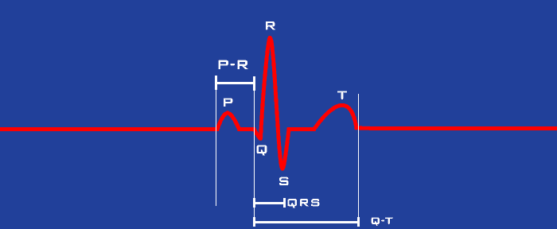

About ECG
The ECG (electrocardiogram, also called EKG) is a way to measure the electrical activity of the heart. Each heartbeat produces a small electrical signal, and the ECG records this signal over time.
Researchers use ECG signals in psychophysiology to understand how the heart and nervous system work together. For example, from ECG data we can calculate heart rate, heart rate variability (HRV), and respiratory sinus arrhythmia (RSA), which reflects how heart rate changes with breathing and is closely linked to activity in the parasympathetic nervous system. When ECG is recorded together with impedance signals, we can also estimate sympathetic nervous system activity using measures such as pre-ejection period, stroke volume, and cardiac output.
Before analyzing data, it is important to understand what a normal ECG looks like and what each part of the waveform represents.
Components of ECG
In clinical cardiology, a 12-lead ECG is commonly used to capture the heart’s electrical activity from multiple perspectives, making it highly useful for medical diagnosis. However, this level of complexity is not necessary for studying heart rate variability or impedance cardiography.
For these applications, a simpler 3-electrode setup—known as a Lead II configuration—is typically sufficient. This configuration produces a clear and consistent waveform, allowing for reliable identification of key fiducial points, particularly the R peak.
The following figure illustrates a typical ECG cycle recorded using this configuration:

On the graph above, you will notice several labeled components of the ECG waveform: P, Q, R, S, and T waves. At this stage, it is not essential to fully understand the physiological basis of this morphology. However, it is important to be able to visually recognize these components and understand their relative timing within each cardiac cycle.
For heart rate variability and impedance cardiography, the R peak is the most critical feature to identify. Once the R peaks are reliably detected, many downstream analyses become possible and more straightforward.